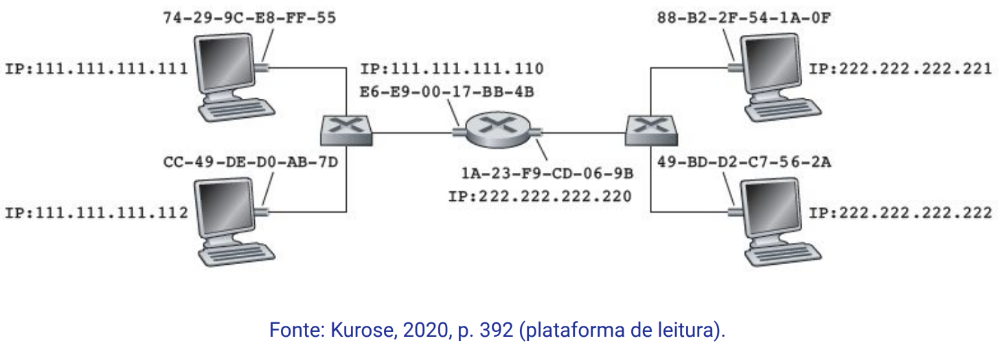

Disciplinas
INFRAESTRUTURA PARA SISTEMAS DE SOFTWARE-T01-2024-2 Concluído
Materiais
Vídeo 2 - [UFMS Digital] Infraestrutura para Sistemas de Software - Módulo 2 - Unidade 2 - Parte 2 - Os mecanismos de endereçamento na rede sendProf.° ministrante: Carlos Alberto da Silva
Conteúdo
Protocolos sobre IP
- Protocolo sobre IP: ARP, DNS e DHCP.
Protocolos sobre IP.
Protocolo ARPO protocolo de resolução de endereço (ARP) é um protocolo:
- que resolve o endereço lógico IP de 32 bits (camada de rede) em um endereço físico MAC de 48 bits (camada de enlace).
- O gateway (Bridge ou Switch) que faz a conversão usando o Protocolo ARP
- Quando pacotes de dados chegam a um gateway destinados a uma máquina host específica.
- O gateway permite que os dados fluam de uma rede para outra, solicita que o programa ARP encontre um endereço MAC que corresponda ao endereço IP.
- O cache ARP (tabela ARP) mantém um registro de cada endereço IP e seu endereço MAC correspondente.
- O campo Time to Life (TTL) define o tempo de vida desta informação.
Exemplo de duas redes conectadas por um roteador (ARP funcionando):
Existem diferentes versões e casos de uso de ARP:
- ARP de proxy: o proxy está ciente da localização do destino do tráfego e oferece seu próprio endereço MAC como destino.
- ARP gratuito: um host em uma rede simplesmente anuncia ou atualiza seu endereço IP para MAC.
- ARP reverso (RARP): As máquinas host que não conhecem seu próprio endereço IP podem usar o ARP reverso (RARP) para descoberta.
- ARP inverso (IARP): Enquanto o ARP usa um endereço IP para localizar um endereço MAC, o IARP usa um endereço MAC para localizar um endereço IP.
O protocolo sistema de nomes de domínios, Domain Name System (DNS), resolve os nomes de domínios em endereço IP.
- Sempre que acessar um site (domínio), usamos uma URL, como: alura.com.br e ufms.br.
- Um sistema de banco de dados armazenados em servidores DNS:
- respondem a estas solicitações
- exemplo: www.uol.com.br = 13.227.97.71
DNS público é um serviço aberto, menos seguro, e gratuito.
DNS privado é um serviço pago, mais seguro, e contrato para oferecer um desempenho personalizado e maior privacidade.
DNS público:
● Google DNS (Google Public DNS)
Endereços IPV4: 8.8.8.8 e 8.8.4.4
Endereços IPV6: 2001:4860:4860:0:0:0:0:8888 e
2001:4860:4860:0:0:0:0:8844
● Cloudflare DNS é um DNS focado em segurança e privacidade e é muito rápido.
Endereços IPV4: 1.1.1.1 e 1.0.0.1
Endereços IPV6: 2606:4700:4700::1111 e 2606:4700:4700::1001
Protocolos sobre endereço IP.
Protocolo Dinâmico de Configuração de Host (DHCP)O protocolo DHCP é um protocolo de cliente/servidor que fornece, automaticamente, a um host (cliente):
- um número IP (Protocolo de Internet);
- a máscara de sub-rede;
- o número IP do DNS;
- e o gateway padrão (roteador).
- Um servidor DHCP baseia-se nas RFCs 2131 e 2132.
- Um padrão IETF (Internet Engineering Task Force).
- ⇒ endereço físico MAC pode ser utilizado para verificar autenticidade e autorizar um número IP de uma sub-rede.
Referências:
KUROSE, Jim; ROSS, Keith W. Redes de Computadores e a Internet: uma Abordagem Top-down, 8 Edição. Editora Pearson, 2021. ISBN: 9788582605592. p. 265-282. Disponível na Biblioteca Digital da UFMS.
TANENBAUM, Andrew S.; FEAMSTER, Nicholas; WETHERALL, David J.; Redes de Computadores, 6ª Edição. Editora Pearson, 2021. ISBN: 9788582605615. p. 284-306. Disponível na Biblioteca Digital da UFMS